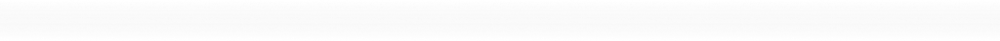
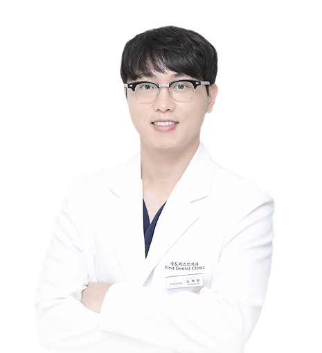
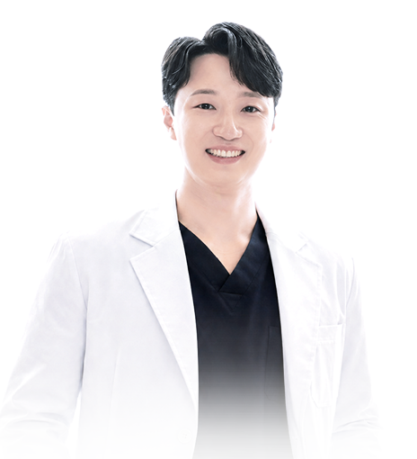
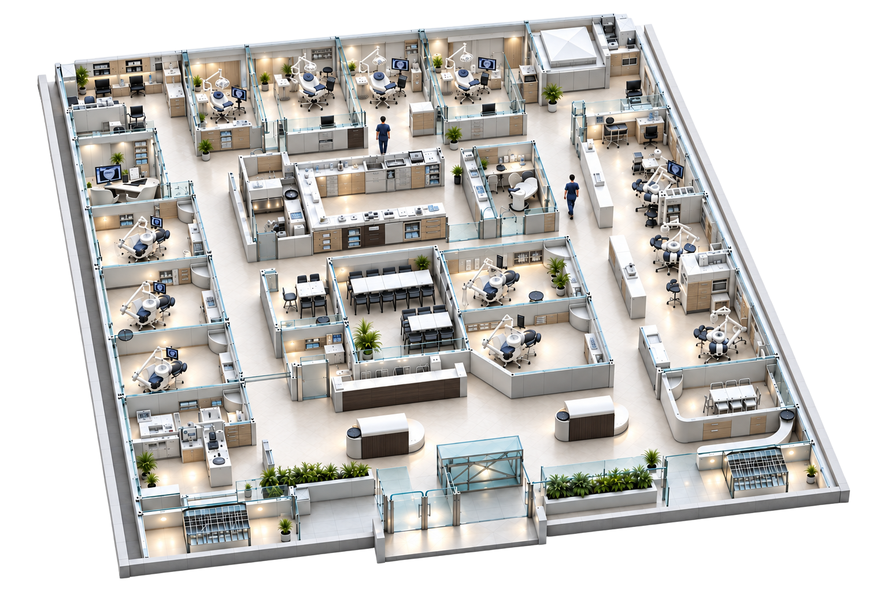
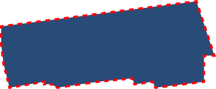
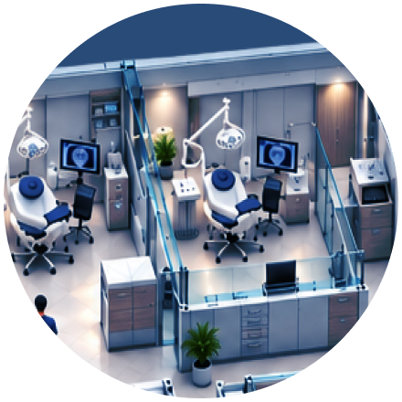
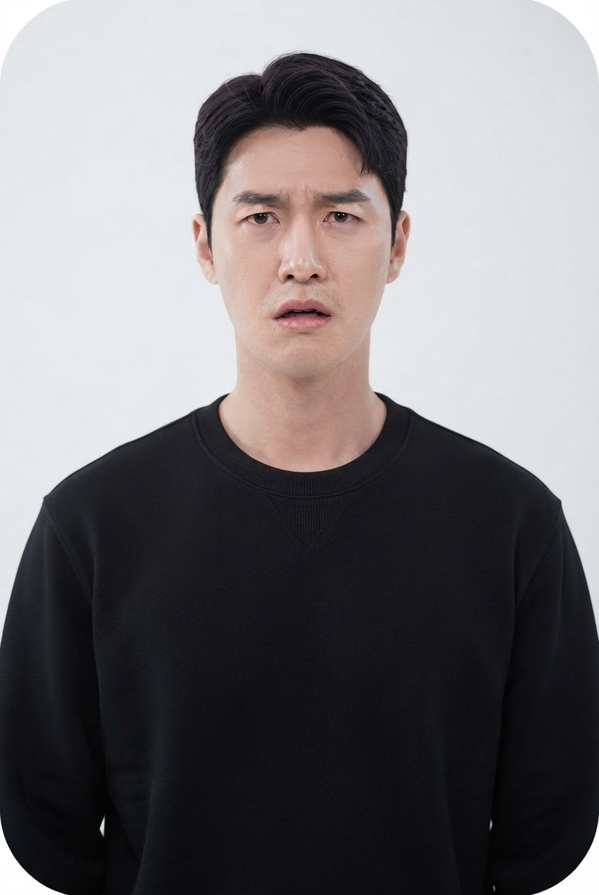

산본중심치과는20년 뒤를 생각하며 치료합니다.

20년 뒤를 위한 치료는,
환자분들의 궁금증과 불안함을
해소하는것에서 출발합니다.

환자분들 개개인의 상황에 맞는 정답을 찾기 위해,
각 분야의 전문의가 함께 고민합니다.자연치아를 지키는 방법부터 고난이도 수술까지 믿고 맡기는 치과
치주과 · 보존과 · 교정과 전문의가 함께합니다.

치아의 배열과 맞물림이 조화를 이루도록
치아의 위치와 교합을 함께 살펴,
기능과 균형을 고려한 교정치료를 계획합니다.

임 재 형
심미치료 센터장
자연치아를 오래 지킬 수 있도록
치아를 받치는 잇몸부터 살펴,
자연치아를 보존할 가능성을 고민합니다.

강 명 범
대표원장｜임플란트 수술 센터장
편안하게 씹고 자연스럽게 웃을 수 있도록
씹는 기능과 치아의 모양을 함께 고려해,
환자분께 맞는 보철치료를 계획합니다.
박 슬 지
보철·보존 센터장
200평 규모의 대형 공간 내
분야별 전문 진료센터가
한데 어우러집니다
치료 계획부터 사후관리까지, 한곳에서 이어지는 진료.치아를 살리는 치료부터 수술과 보철치료,
치료 후의 정기적인 점검까지.
각 분야의 전문의가 치료의 과정과 그 이후를 함께 생각합니다.


어려운 치료가 필요해져도 독립된 수술실과 수술 준비 공간을 갖춰임플란트와 복잡한 수술까지 이어서 진료합니다.


심미치료 센터 바로가기
사랑니·턱관절 센터 바로가기
임플란트 센터 바로가기
오늘의 정성스러운 치료계획과 전문적인 치료가
20년뒤의 치아건강을 지킬 수 있습니다.
믿고 맡기는 치과. 산본중심치과
50대

Before
After
Before
After
01
남은 치아가 거의 없어 무엇을 먹어도 통증이 오고,
제대로 씹을 수 없어 첫 내원
01
3D CT 및 구강 스캐너를 통해
잇몸뼈의 양과 신경 위치를 분석한 최적 식립 위치 도출
03
튼튼하게 고정된 상악 임플란트를 통해
자연스러운 심미성과 마음껏 씹는 저작력 복원
치과 정보
오시는 길
경기도 군포시 산본로323번길 16-6(산본동), 신명타워 6층
4호선
산본역 3번 출구 육교 끝 농협 맞은편
주차 안내
P
이마트 산본점 (무료) : 경기 군포시 산본로 347 신세계산본점
P
산본중심 지하주차장 (1시간 30분 무료) : 경기 군포시 산본로323번길 16-36
P
산본로데오 주차장 (무료) : 경기 군포시 청백리길 13
전화상담
0507-1369-2882진료시간
월, 수 (야간)
화 목 금
토 요 일
점 심 시 간
AM 10:00 ~ PM 09:00
AM 10:00 ~ PM 07:00
AM 09:00 ~ PM 01:30
PM 01:00 ~ PM 02:00
토요일 점심시간 없이 진료 ｜ 일요일·공휴일은 휴진입니다.
산본중심치과
P
산본로데오 주차장
P
이마트 산본점
P
중심 지하주차장
산본중심치과의원 | 강명범 | 사업자등록번호 708-58-00920 | 대표전화 : 031-349-2882
Copyright 2026. SANBON CENTRAL DENTAL CLINIC All rights reserved.
보건복지부 인증 전문의 진료